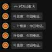
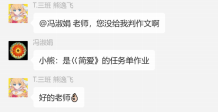

冯声若虎豹，曰：“抬起头来！”“低头者抬头！” 冯气冲九天，曰：“双手背后！” 冯声如怒雷，曰：“zheihar②有坑，快，收集！” 冯曰：“快，把错题每个写二十遍！” 冯曰：“清北老教授看的就是这个。③” 冯曰：“你们的基础很差，这是之前教你们的老师的罪过。” 冯曰：“记住：是用手写，不是打字！④” 冯曰：“有一个快办法，对着手机用语言输入，比打字快。” 冯曰：“提示：孩子们，今天下午上课之前的课前测试，已经发布了，可以抢跑⑤， 因为你们的基础知识需要巩固一下。” 冯曰：“故居研学的题目根本没有价值，请个别组查一下微课题如何拟题！” 冯曰：“孩子们：请保存这个通知，获奖作文证书属于清北加分项目⑥。” 冯曰：“通知：文言文专题复习，已经发布了，大家对照大黄本⑦和语文书，一边 复习，一边收集知识盲点，做好错题记录和知识复盘。本次作业启动了文言文专 题的复习，希望你们提高效率。” 冯曰：“注意：我会根据大家作业的态度，提供文章发表的机会，我们还有多个发 表文章的机会，请大家要重视。” 冯曰：“三班的同学们：在你看不见的地方，4 班偷偷的自学优生拓展课程的微课， 从后台数据来看，有些学生对于一个知识点反复观看了多次，你们也不要落后啊。” 冯曰：“学校要求对你们的作业评价要上交的， 作业评价会纳入你们的总评价， 请长点心吧。别拿自己前途开玩笑。” 冯曰：“注意：这项作业写了一个月，本应质量很高，让我看见了你们的学习态度。 咱们贯通班非常重视对此项作业的评价。不认真的小组，你们知道后果吗？” 冯曰：“下周开始：上课前十分钟，我不给时间，直接抽测古诗文默写！请大家提 前准备一下。” 冯曰：“凡是故居研学不虚此行，写了故居有关作文的，又多了一个发表的机会。 你的付出，老师用发表文章奖励你们⑧，继续劳动吧。大家加油。” 冯曰：“请记住：第一个记叙文写作，应该在平时的学习中用力。咱们《论语》讲 述；中轴线研学后分享；故居参观后陈述；画脸谱活动；担任各种活动主持人； 以上体验都可作为高考作文的备料⑨！加油吧。孩子们，做一个有心人，才能在高 考中胜出。” 冯曰：“各位组长：务必把好关，开学第一周开始班级辰示，不要让别的组笑话。” 冯曰：“注意：将来学校留人，非常看重这一点，清北人才选拔也看重有份量的证 书。” 冯曰：“开学给你们排队，除了成绩之外，学校对你们的评价还有能力，写作表达 能力是一项很重要的指标，你别后悔哈。” 冯曰：“警示：科普作文还有未交的，这一项综合评价 10 分，你不想要了，我就 给你 0 分吧。”
冯曰：“头上三尺有神明！” 冯曰：“你们这是逆天的行为，老天会来收你们的！” 冯曰：“冯老师有神通，我看一眼就知道你晚上肯定没睡觉又玩手机来着。你要知 道，玩手机伤的是神，精气神，那手机的厂商还笑话你呢，你伤害自己还给人家送去 了财富，为什么要让人家笑话呢？” 冯曰：“可乐有黑色素；那些快餐里有氢化油；你吃汉堡，你就会长得像汉堡。” 冯傲然曰：“我当初上学的时候可是学霸，我和同学的小圈子，班级前三不让男生 进。” 冯教人习数学之法：“你应该像我当初那样，不会就背。我当初就把数学题都背下 来，考试换几个数字就行了，理科都应当这么学。”
冯曰：“看了个别组员的作业，太单薄，上网复制粘贴的内容太多了。不要做假， 要发自内心的写收获。” 冯曰：“群里不点名，是给你面子，希望你抓紧上交” 冯曰：“你现在睡就是没在应该睡觉的时候睡觉，凭什么在我课上睡觉，你们某些 人就是晚上不睡觉在被窝里偷偷玩手机，那都是害人的玩意，就是对你们自己的内耗。 你们 zheihar 每天熬夜肯定是在看手机，“我留的作业又不多”，肯定很早就能写完， 你们肯定是熬夜偷偷玩手机看小说，所以才上课睡觉。zheihar 天天看手机容易得癌 症，而且吃肉就容易中风，到时候是你养你们父母还是你们父母养你，一群人全都是 逆子。” 冯曰：“你们不应该吃水果。水果是树的孩子，也是生命，生命就应该是平等的， 凭什么是你吃他们而不是他们吃你？你这就是逆天的行为” 冯曰：“你吃什么，什么就会吃你，这是易经的智慧” 冯曰：“警示：凡是退回作业，后台也有差评记录，大数据谁也改不了。奉劝大家 写作业争取一次成功。” 冯曰：“一鸣惊人的成绩都是在别人看不到的地方，悄悄发生着，为咱们班悄悄阅 读和吸收写作精华的学生点赞。” 冯曰：“大家请记住：听话+实干=成绩和惊喜” 冯曰：“请记住：种下多少劳动，收获多少果实。当你面对机会，还在抱怨，“为 什么又加了一项作业”的时候，别人已经默默前行，最后横空出世的一刻，你只能仰望别人，因为，他们已经在你抱怨、逃避的时候，成为了学习的巨人，成为 了最好的自己。” 冯曰：“这个参赛活动是大家自己上传的作文，有些学生因为年龄不够，没有上传， 有些学生因为懒惰没有上传。不管什么原因，请你从现在开始，抓住后面的发表 文章的机会吧。”
冯曰：“你们要向林颖学习。” 冯曰：“达达：请上交作文！” 冯于微信曰：

冯教学生曰：
冯语枭雄曰：

冯曰：“王泽达：你的成语梳理作业不合格，请补充。 李佳宁：你的作文为何不重新写，你的备料作文那么值得改吗？提供了满分作文 多篇，你仿写一篇也能提分啊。 周煜阳：你的成语梳理笔记太简单。” 冯曰：“古时候求学都是要给老师带肉干，站着上课的。现在倒好，你们不给我带 肉干，还让我站着。” 冯曰：“一、我不会检查你的自主复习，学习凭借良心；二、这是你自己的前途问 题；三、我会邀请优生分享收获” 冯曰：“学习委员：记住，每次我在群里点名的，务必写入作业统计表。” 冯曰：“超星作业刚刚为一些人延时了，请未交作业的同学尽快提交作业！” 冯曰：“超星错题一定收集！” 冯曰：“绿萝开花吗？不开花！我特意查了！” 冯敩作文曰：“枯树也美丽。” 冯授理曰：“当你在桥上看风景时，你也成为了别人的风景。” 冯怒曰：“你们强行占用我两分钟！” 冯曰：“我早上两分钟课，也早下两分钟。⑩” 冯语生曰：“这周的美术课我上了，下周给你们补回来⑪，专时专用，冯老师很讲 信用。” 冯曰：“吾叫汝三次，为何不应！” 冯三言曰：“孩子们：前几天生病的学生，不必把作业全部补完，今后慢慢补。 今天，因为身体不舒服，作文题纲也可以不写了，明天直接写大作文吧。 身体健康是第一位的，老师非常理解你们的不容易。” 冯曰：“我奋力托举你们。” 冯曰：“大家给我掌声。” 冯于微信曰：“袭思源：加我微信。” 冯敩作文曰：“我向它深深鞠了一躬。” 冯复言：“大蝴蝶保护小蝴蝶，此母爱也！” 冯曰：“注意：我会根据大家作业的态度，提供文章发表的机会，我们还有多个发 表文章的机会，请大家要重视。”
冯曰：“呜呼！日寇乃军国主义也。” 冯曰：“吾去倭岛富士山，大雪三日，遂与吾儿两人以球击小日本也。” 冯嬉：“当初我去芬兰，那的老师真的会教学生。她们也不打骂学生，就是让幼儿 园的孩子坐在一个球上，让他坐不稳，这样孩子就哭。” 冯曰：“我看到芬兰的小孩一个书包三千多块钱。” 冯慨然曰：“当初小日本打美国，出动了两百多架战斗几吧，美国好像只起飞了两 架还是怎么着，你想想，两架对几百架，多壮烈。所以小日本真是祸害。” 冯愤然道：“美国就是畜生！你看看它，天天想着和中国作对。”
时冯历一年十二月十三日。语文课正上，诸生方闻冯阴阳。冯忽话锋一转，其言 之古代农作物之精粹富于今也。众皆疑。其复语众：“予尝食东北大米，然今日之米 不及昔日，是化肥所致焉！”其又云：“古人无基因之物，果蔬鲜也！”生憋笑难忍。 然实情何哀哉！是封建余老，肆虐于莘莘学子课堂，自以为然，嘴硬如石，其言如亵 物。呜呼，哀哉！ 时崇祯三百九十五年九月，余往景山。大雨三日，山中人鸟声俱绝。是日正午， 余与同窗数人前往景山看雨。山中影子，惟青葱翠柏与余数人也。忽见一锦旗飘扬， 大惊。上前看时，只见中刻：冯淑娟万岁，右刻其年月。色玄墨，苍劲有力，余大为 赞叹。噫！技亦灵怪矣哉。不敢久居，乃记之而去。 时冯历一年十一月，冯御观世界杯，望德、日倒球于场内，略无中国队影，乃大 怒，愤而喷之：”此乃军国主义，呜呼！小日本亡我之心不死，法西斯恶犬，国苦也！ “众皆移目，不敢前语，然余笑矣。 我横竖睡不着，仔细看了半夜，才从字缝里看出字来，满本都写着两个字是“有 坑” 冯助吾辈作文，取金硕之例，金硕大惊，答之以微笑。 尝趋百里外，从校之先达执经叩其办公室。正高级德隆望尊——forbidden，三班 四班填其室，未尝稍降辞色。余立侍左右，面色为难，援疑质理，俯身倾耳以请；或 遇其叱咄，色愈恭，礼愈至，不敢出一言以复；俟其欣悦，则又请焉，而先达“朝花 夕拾”矣。余甚愚，故无所获。 冯曰：“你只可到这里，不可越过。”于是，同学们的作文分数都停在了 37 分 以下。 冯曰：“苟日新，日日新，又日新。”于是，她每天为同学们编篡新的小学作文 与语录。 冯曰：“你 zheihar 是开头，zheihar 是结尾。”于是，世界上的事物便有了始 末。 冯曰：“头上三尺有神明，恶毒之人收到恶报。”于是，世上所有吃外国食物， 赞美樱花的人收到神的惩罚。 冯曰：“我是来渡你们的。”于是，不懂得感恩的同学都被教导学会感恩。 冯曰：“我比你们的父母还爱你们。”于是，世上有了父爱母爱。 ——《圣经•马太冯音》 时冯历一年十二月九日，两课连堂，冯故发生测试。半课毕，冯卒开麦，连清数 嗓，其声如癞蛤蟆之鸣，如漏风气鼓，如破锣，声如响雷，声声震耳。生恶之，然则 静音。一课毕，忽曰：“今日亡课间乎！”生怒，不敢言。至于试毕，不习考点，不 温旧识，开一答案文档读之，命生自判。然主观题，何以判？生问其一，答之其二， 终不知其解。自以为良好者，冯也。何哉？只增笑耳。